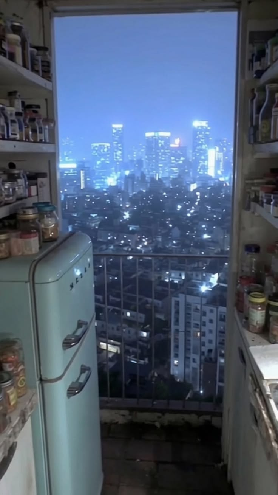
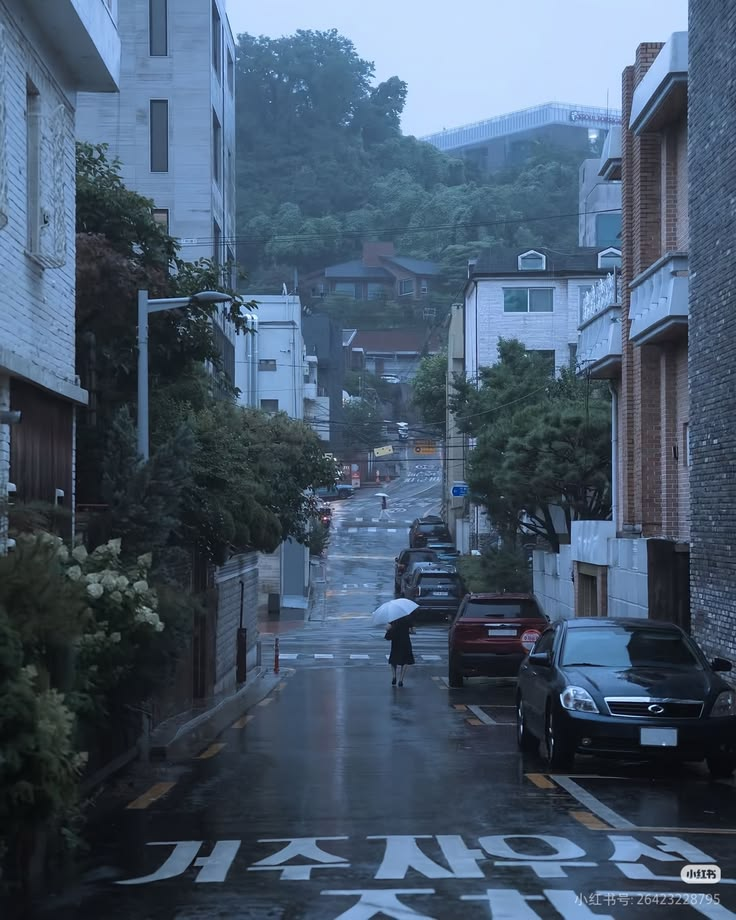
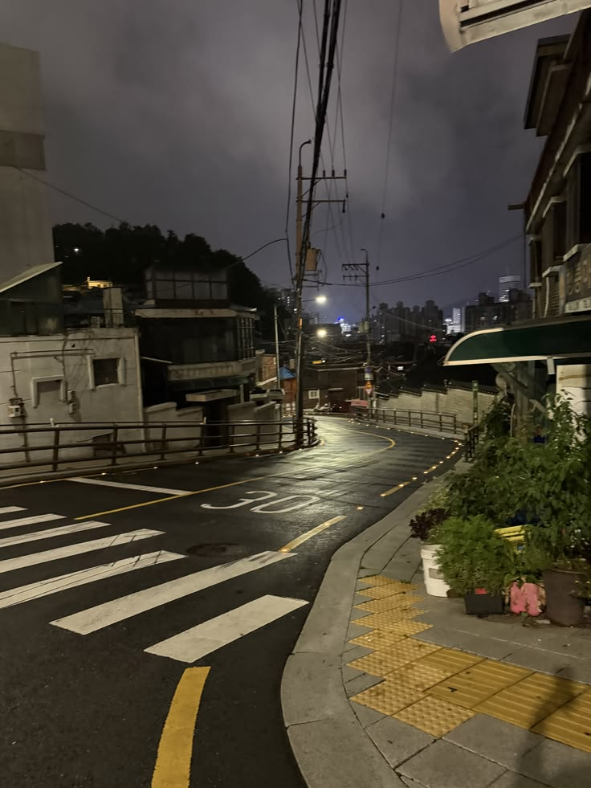

Last Stop Nowhere · palette v3 · picture 5 colours, Seoul street vibe · every hex sampled

5 · the kitchen: the colours. City light, dusk blue, pale window

6 · the rain street: slate, wet asphalt, the sky at the top of the hill

7 · the corner at night: the yellow line, tactile paving, warm dark
Window#E3F4F8 · picture 5
pages
Rain sky#C3DCFF · picture 6
washes, boxes
City light#76A1E6 · picture 5
tabs, links
Dusk#6888C9 · picture 5
headings on light
Slate#475D76 · picture 6
labels, rules
Asphalt#272F36 · picture 6
text, dark base
Road yellow#CBB26E · picture 7
the one accent